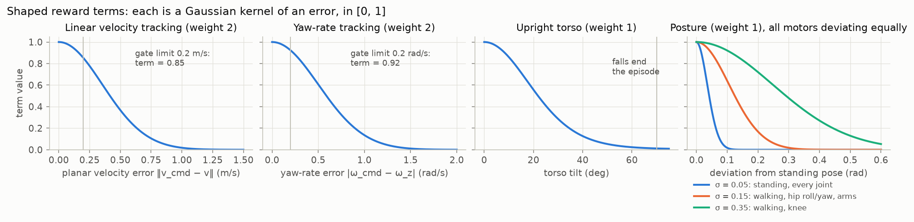
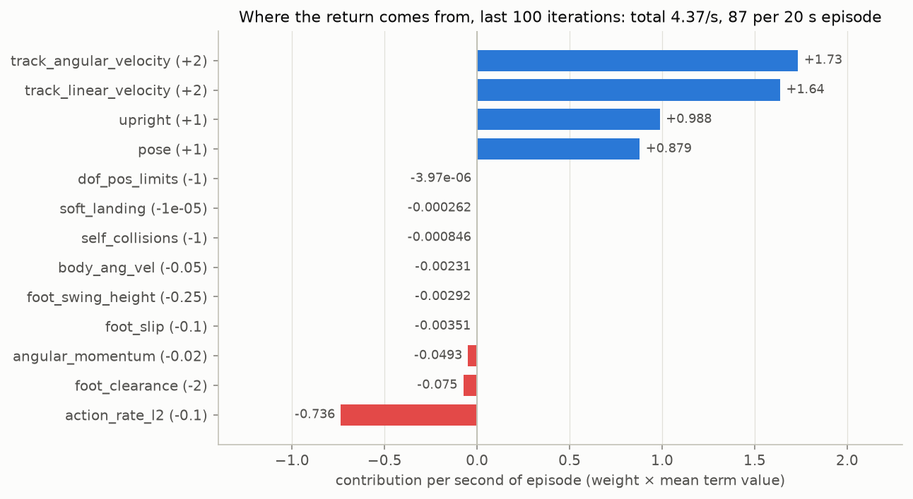
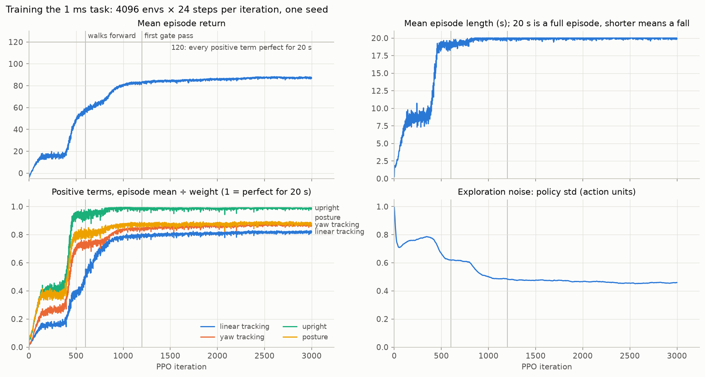
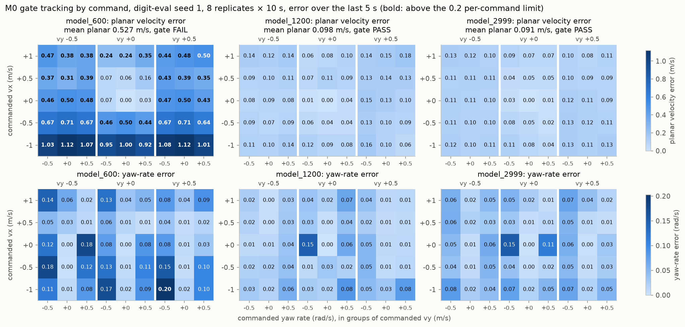

Digit M0: a worked learning example¶
This page explains the September 2026 M0 baseline and its retained evidence. It is a worked example, not a summary of every current Digit policy. Later cadence, drive and task-space variants have different configurations; use the learning workflow for current entry points and the app contracts for their limits.
M0 trains a neural-network policy that makes Digit walk at a commanded forward speed, sideways speed and yaw rate on flat ground. This document explains how:
- the learner;
- what the policy sees and commands;
- the rewards that shape the gait;
- what training produced.
It explains; it does not define. The contract is the app's APP.md and the code it names, and the latest demonstrated result is in VALIDATION.md. Where they disagree with this page, they win.
The task is Digit-Velocity-Flat-1ms. It starts from mjlab's make_velocity_env_cfg() recipe, the one mjlab's Unitree G1 uses, and changes only what Digit needs:
- joint reads through compiled-model addresses, because of Digit's ball-jointed rods;
- Digit's posture tolerances;
- a narrower lateral command range;
- a self-collision penalty;
- flat terrain;
- the C++ plant's physics options.
At a Glance¶
| Item | M0 choice |
|---|---|
| Learner | PPO (RSL-RL), asymmetric actor–critic, 4096 parallel envs on one GPU |
| Simulator | mjlab on MuJoCo Warp; 1 ms physics step with the C++ plant's solver options |
| Policy rate | 50 Hz; each action is held for 20 physics steps |
| Actor input | 92 values: base velocities, gravity direction, 30 joint positions and velocities, last action, command |
| Critic input | The actor's 92 without noise, plus 12 privileged foot values |
| Output | 20 joint-position offsets from the standing pose, tracked by torque-limited PD |
| Reward | 4 Gaussian tracking and shaping terms, 9 active penalties (10 listed, one weighted 0) |
| Episode | 20 s; ends early when the torso tilts past 70° |
| Budget | 3000 iterations, 2.95e8 policy steps, 1 h 41 min on an RTX 4090 |
How the Pieces Fit¶
flowchart LR
subgraph ENV["mjlab environment, 4096 copies on the GPU"]
CMD["Command sampler<br/>vx, vy, ωz"]
SIM["MuJoCo Warp<br/>1 ms step"]
PD["20 position actuators<br/>PD, torque-limited"]
OBS["Observation terms<br/>+ uniform noise"]
REW["14 reward terms<br/>weighted, × 0.02 s"]
TERM["Termination<br/>tilt > 70° or 20 s"]
end
subgraph LEARN["RSL-RL PPO"]
ACT["Actor MLP<br/>512-256-128, Gaussian"]
CRIT["Critic MLP<br/>512-256-128"]
BUF["Rollout buffer<br/>24 steps × 4096 envs"]
UPD["GAE + clipped PPO update"]
end
CMD --> OBS
SIM --> OBS
OBS -- "92 noisy values" --> ACT
OBS -- "104 clean values" --> CRIT
ACT -- "action a, 20 values" --> PD
PD -- "joint torque" --> SIM
SIM --> REW --> BUF
SIM --> TERM --> BUF
CRIT -- "V(s)" --> BUF
BUF --> UPD
UPD -- "new weights" --> ACT
UPD -- "new weights" --> CRITOnly the actor is deployed. The critic exists to estimate returns during training, so it may see simulator quantities that the robot cannot measure.
Timing¶
sequenceDiagram
participant P as Policy (50 Hz)
participant A as Position actuators
participant M as MuJoCo (1 kHz)
P->>A: target = q_stand + s · a, held for 20 ms
loop 20 physics steps
A->>M: τ = clamp(kp (target − q) − kd q̇, ±τmax)
M-->>A: q, q̇
end
M-->>P: next observation and rewardThe PD law runs inside MuJoCo at every 1 ms physics step, as position actuators. The policy only moves the setpoint. The training timestep of 1 ms is a separate decision from the plant's 0.5 ms step; the learning roadmap records why.
Observations¶
The actor sees 92 values, concatenated in this order. The noise is uniform, added during training only.
| Term | Size | Definition | Noise (±) |
|---|---|---|---|
| Base linear velocity | 3 | Root velocity in the torso frame, from the simulator's true state | 0.5 m/s |
| Base angular velocity | 3 | Root angular velocity in the torso frame | 0.2 rad/s |
| Projected gravity | 3 | Unit gravity direction in the torso frame; its x and y parts encode tilt | 0.05 |
| Joint positions | 30 | \(q - q^{\text{stand}}\) for the 20 motors and 10 passive joints | 0.01 rad |
| Joint velocities | 30 | \(\dot q\) for the same 30 joints | 1.5 rad/s |
| Last action | 20 | The previous raw policy output \(a_{t-1}\) | none |
| Command | 3 | \((v_x^{\text{cmd}}, v_y^{\text{cmd}}, \omega_z^{\text{cmd}})\) in the torso frame | none |
- Passive joints. They are the ten the LLAPI measures: shin, tarsus, heel spring, toe pitch and toe roll on each side. The ball-jointed rods are not observed.
- Joint reads. All joint terms read each hinge at its compiled qpos and dof address (mdp.py). mjlab 1.6's name-based joint terms misread 17 of Digit's 20 motors.
- No memory. There is no observation history, no gait clock and no phase variable. Rhythm comes from the dynamics and the rewards; the last action is the only memory.
- No estimator in training. The base velocity is simulator truth, and the ±0.5 m/s noise is the only stand-in for estimation error. M1b has since run the policy on InEKF estimates in the C++ plant; see What M0 Does Not Cover.
- Critic extras (12). Foot height above the ground, current air time, contact flags, and contact force (signed \(\log(1+|F|)\), 3 per foot), for both feet.
Actions¶
The policy outputs 20 unbounded numbers, one per motor. Each becomes a joint-position target around the standing keyframe:
A unit action therefore asks for 25% of the joint's torque limit at zero velocity. MuJoCo applies the PD law at every physics step:
- Gains. \(I_a\) is the joint's reflected motor inertia (MJCF armature), with \(\omega_n = 2\pi \cdot 10\) Hz and \(\zeta = 2\) (
RL_GAINS). - Torque units. \(\tau^{\max}\) is the joint-side limit, the MJCF motor's
ctrlrangetimes its gear. The C++ plant expects motor-side torque, so a deployed policy must send \(\tau / \text{gear}\).
Left side, read back from the exported policy contract; the right side mirrors it.
| Joint | Standing angle (rad) | \(k_p\) (Nm/rad) | \(k_d\) (Nm·s/rad) | \(\tau^{\max}\) (Nm) | \(s\) (rad per unit action) |
|---|---|---|---|---|---|
| hip roll | 0.317 | 686 | 43.7 | 126.7 | 0.046 |
| hip yaw | 0.000 | 268 | 17.1 | 79.2 | 0.074 |
| hip pitch | 0.028 | 476 | 30.3 | 216.9 | 0.114 |
| knee | −0.053 | 476 | 30.3 | 231.3 | 0.122 |
| toe A | 0.061 | 143 | 9.1 | 42.0 | 0.074 |
| toe B | −0.101 | 143 | 9.1 | 42.0 | 0.074 |
| shoulder roll | −0.300 | 686 | 43.7 | 126.7 | 0.046 |
| shoulder pitch | 0.944 | 686 | 43.7 | 126.7 | 0.046 |
| shoulder yaw | 0.000 | 268 | 17.1 | 79.2 | 0.074 |
| elbow | 0.363 | 686 | 43.7 | 126.7 | 0.046 |
These gains are soft. At zero action Digit collapses, so the policy must learn to hold itself up as well as to walk. They are simulation starting values, not hardware gains.
Commands¶
flowchart TD
R["Every 3–8 s, per env: resample"] --> U["vx ~ U(−1, 1) m/s<br/>vy ~ U(−0.5, 0.5) m/s<br/>ωz ~ U(−0.5, 0.5) rad/s<br/>heading target ~ U(−π, π)"]
U --> F{"forward env?<br/>p = 0.2"}
F -- yes --> F1["vx = max(abs(vx), 0.3)<br/>vy = 0, ωz = 0"]
F -- no --> H
F1 --> H{"heading env?<br/>p = 0.3"}
H -- yes --> H1["every step:<br/>ωz = clip(0.5 · heading error, ±0.5)"]
H -- no --> S
H1 --> S{"standing env?<br/>p = 0.1"}
S -- yes --> S1["command = 0"]
S -- no --> OUT["command in the torso frame"]
S1 --> OUT- Independent flags. The three flags are separate coin flips. Standing overrides everything, and a heading env's yaw rate overrides the forward flag's zero.
- Curriculum. mjlab's command curriculum would widen vx to (−1.5, 2.0) m/s and ωz to ±0.7 rad/s at iteration 5000, and vx to (−2, 3) m/s at 10,000. The 3000-iteration run never reached either stage, so the policy has only seen the ranges above.
Rewards¶
At each policy step the reward is a weighted sum scaled by the step length \(\Delta t = 0.02\) s:
The four positive terms are Gaussian kernels of an error, so each lies in \([0, 1]\) and is 1 only when the error is zero. A perfect 20 s episode would score \((2 + 2 + 1 + 1) \times 20 = 120\).
| Term | \(w\) | \(f\) |
|---|---|---|
| Linear velocity tracking | 2.0 | \(\exp\!\left(-\left(\lVert \mathbf v^{\text{cmd}}_{xy} - \mathbf v_{xy}\rVert^2 + v_z^2\right) / 0.25\right)\) |
| Yaw-rate tracking | 2.0 | \(\exp\!\left(-\left((\omega^{\text{cmd}}_z - \omega_z)^2 + \omega_x^2 + \omega_y^2\right) / 0.5\right)\) |
| Upright torso | 1.0 | \(\exp\!\left(-(g_x^2 + g_y^2) / 0.2\right)\), with \(g\) the unit gravity vector in the torso frame |
| Posture | 1.0 | \(\exp\!\left(-\frac{1}{20}\sum_{j=1}^{20} (q_j - q_j^{\text{stand}})^2 / \sigma_j^2\right)\) over the motors |
Velocities are the root body's, in the torso frame. The tracking terms also penalize vertical bounce and roll and pitch rates.

- Tracking is forgiving near zero. At the gate's 0.2 m/s limit, linear tracking still pays 0.85 of its maximum, so the reward pushes hardest on large errors.
- Upright. It falls to 0.5 at about 22° of tilt.
- Posture tolerance depends on speed. With commanded speed \(c = \lVert \mathbf v^{\text{cmd}}_{xy}\rVert + |\omega^{\text{cmd}}_z|\):
| Regime | Condition | \(\sigma_j\) |
|---|---|---|
| Standing | \(c < 0.05\) | 0.05 rad on every joint, which holds the stance tightly |
| Walking | \(0.05 \le c < 1.5\) | hip pitch 0.3, knee 0.35, toes 0.25, hip roll and yaw 0.15, shoulder pitch and roll 0.15, shoulder yaw 0.1, elbow 0.15 |
| Running | \(c \ge 1.5\) | Looser; rare in the initial command range |
The penalties shape the gait and discourage harmful motion. Foot terms apply only while the command is nonzero (\(c > 0.05\)), so standing still costs nothing.
| Term | \(w\) | Cost \(f\) |
|---|---|---|
| Foot clearance | −2.0 | \(\sum_{\text{feet}} \lvert h - 0.10\rvert \cdot \lVert \mathbf v_{xy}\rVert\): a moving foot should be 10 cm up |
| Joint limits | −1.0 | Sum of motor excursions beyond 90% of each joint's range |
| Self-collision | −1.0 | Number of the last 4 recorded substeps with a self-contact force above 10 N |
| Foot swing height | −0.25 | At each touchdown, \((h^{\text{peak}}/0.10 - 1)^2\) |
| Action rate | −0.1 | \(\lVert a_t - a_{t-1}\rVert^2\) |
| Foot slip | −0.1 | \(\sum \lVert \mathbf v_{xy}\rVert^2\) over feet in contact |
| Torso angular velocity | −0.05 | \(\omega_x^2 + \omega_y^2\) of the torso |
| Angular momentum | −0.02 | \(\lVert \mathbf L\rVert^2\), whole-body angular momentum about the centre of mass |
| Soft landing | −1e‑5 | Sum of contact force magnitudes at touchdown |
| Air time | 0 | Disabled |
Foot height \(h\) is measured by a ring of six rays around each sole centre; foot velocity is the sole site's.

At the end of training the positive terms earn 5.24 per second and the penalties cost 0.87, for a net 4.37 per second, or 87 per episode. Action rate accounts for 0.74 of the penalties. The others each cost under 0.08 per second: they are nearly satisfied, not ignored.
These are training rewards, measured on the stochastic policy. The action-rate term therefore includes exploration noise, which is still 0.46 action units at the end, as well as the mean policy's own changes.
Episodes, Resets and Randomization¶
| Aspect | Setting |
|---|---|
| Length | 20 s (1000 policy steps). A timeout is treated as truncation: PPO bootstraps the return with \(\gamma V\), so running out of time is not scored as failure. |
| Failure | Torso tilt above 70° ends the episode, with no extra penalty. It only forfeits future reward. |
| Joint reset | The IK standing keyframe, ball-joint quaternions included, with zero velocity. Joint angles are not randomized, because the closed chains would need a constraint solve. |
| Base reset | ±0.5 m in x and y, 1–5 cm above the keyframe height, any yaw |
| Pushes | Every 1–3 s, the base velocity jumps by up to ±0.5 m/s in x and y, ±0.4 m/s in z, ±0.52 rad/s in roll and pitch rate, and ±0.78 rad/s in yaw rate |
| Foot friction | 0.3–1.2 per env, drawn once at startup |
| Torso centre of mass | Offset by ±2.5 cm in x and y and ±3 cm in z, per env at startup |
| Not randomized | Masses, gains, motor strength, latency, joint friction. Encoder bias is off, because mjlab applies it per joint and would misread Digit. |
The Learner: PPO¶
Proximal Policy Optimization alternates between collecting experience with the current policy and taking a few conservative gradient steps on it. One iteration:
- Rollout. Each of the 4096 envs runs 24 policy steps, 98,304 transitions in all.
- Actions are sampled from \(a \sim \mathcal N(\mu_\theta(o), \operatorname{diag}\sigma^2)\).
- \(\sigma\) is a learned per-action vector, independent of the state, and starts at 1.
- The buffer stores the observations, action, log-probability, reward, done flag and critic value.
- Advantages by generalized advantage estimation, with \(\gamma = 0.99\) and \(\lambda = 0.95\):
$$ \delta_t = r_t + \gamma V(s_{t+1})(1 - d_t) - V(s_t), \qquad \hat A_t = \delta_t + \gamma\lambda(1 - d_t)\hat A_{t+1} $$ - The value target is \(\hat A_t + V(s_t)\). - Advantages are then normalized over the batch. - At 50 Hz, \(\gamma = 0.99\) is an effective horizon of about 100 steps, or 2 s.
- Update. 5 epochs over 4 minibatches of 24,576 transitions, with Adam. With \(\rho = \pi_\theta(a|o) / \pi_{\text{old}}(a|o)\) the loss is:
$$ L = -\min!\left(\rho \hat A,\; \operatorname{clip}(\rho, 0.8, 1.2)\,\hat A\right) + 1.0\,L_V^{\text{clipped}} - 0.01\,\mathcal H[\pi_\theta] $$
Gradient norms are clipped at 1.0, separately for the actor and critic.
- Adaptive learning rate. The rate starts at 1e‑3. After each minibatch:
- if the KL divergence from the old policy exceeds 0.02, the rate is divided by 1.5;
- below 0.005 it is multiplied by 1.5;
- it stays within 1e‑5 to 1e‑2.
| Network | Layers | Activation | Input normalization |
|---|---|---|---|
| Actor | 92 → 512 → 256 → 128 → 20 | ELU | Running mean and variance |
| Critic | 104 → 512 → 256 → 128 → 1 | ELU | Running mean and variance |
The asymmetric critic sees clean observations and foot contact information. That lowers the variance of its value estimates, which makes the advantages the actor learns from less noisy, while the actor stays limited to what a robot can sense.
What Training Produced¶
One run, training seed 42, on the RTX 4090. The per-iteration values are RSL-RL's running means over recently completed training episodes.

- Iterations 0–400: staying up. Episodes lengthen slowly, to about 11 s. Upright and posture rise first, because not falling earns them without any tracking.
- Iterations 400–480: the policy stops falling. Episodes reach 19 s and upright reaches 0.93.
- Iterations 480–1200: tracking. Linear tracking climbs from 0.36 to 0.80 of its maximum, and exploration noise falls from 0.69 to 0.48. At iteration 600 the policy walks forward but not yet backward or sideways.
- After 1200: diminishing returns. The return rises from 83 to 87 over the last 1800 iterations.

The gate (the Digit project's evaluate task) tests 45 fixed commands over the initial range, with eight replicates of 10 s each, and pushes. The rows above show the same progression:
- Checkpoint 600 tracks only standing and slow forward walking (vy = 0, vx of 0 or 0.5 m/s). It falls 0.24–0.35 m/s short at 1 m/s forward. Backward and sideways errors are about the size of the command, and the gate fails.
- Checkpoint 1200 is the first to pass, with a mean planar error of 0.098 m/s against the 0.1 m/s limit.
- Checkpoint 2999 passes on two evaluation seeds. The mean planar error is 0.09 m/s, with no falls in 360 tracking runs and full survival of 0.5 m/s and 1 m/s kicks.
The largest remaining errors are:
- 0.10–0.13 m/s under lateral commands;
- up to 0.15 rad/s when turning in place.
The resulting gait takes about three steps per second, with no flight phase, and the foot apex reaches 85–111 mm at 0.5–1 m/s. VALIDATION.md holds the gate criteria and the gait table.
The capsule behind these figures is 2026-09-27-digit-m0-velocity-policy.
What M0 Does Not Cover¶
- Transfer. Everything on this page is inside mjlab. M1 has since run the same policy in the C++ plant: the five flat scenarios complete on truth (M1a) and on InEKF estimates (M1b). The learning roadmap records that gate.
- Estimation. Training sees true base velocity. In M1b, the policy's tracking on estimates was within 0.01 m/s of its truth runs. The simulated IMU is noiseless, so this says nothing about hardware estimation.
- Small commands. In mjlab and in the plant, the policy barely responds to small lateral and yaw commands. The gate's grid tests only 0 and ±0.5 on those axes, so M0 could not see this; M1 found it.
- Hardware realism. Training has no latency, actuator-dynamics, gain or mass randomization, and no terrain. The plant adds one 1 ms tick of action latency.
- Variance. There is one training seed.
- Range. Commands above 1 m/s forward, 0.5 m/s lateral or 0.5 rad/s yaw were never trained.
- Reward interpretation. Tracking accuracy comes from the gate, not the training reward, because the tracking kernels barely distinguish 0 from 0.2 m/s of error.
Reproduce¶
The commands below use the current Digit project entry points. Training today runs the current task definition; it does not automatically reproduce the September baseline. For a historical comparison, use the revision, configuration and reduced data recorded in the M0 evidence capsule, and keep a new run distinct from the recorded results.
# Train (CUDA workstation), evaluate, export: in the Digit project.
cd apps/digit
pixi run -e learn train Digit-Velocity-Flat-1ms --env.scene.num-envs 4096 \
--agent.max-iterations 3000 --agent.run-name NAME
pixi run -e learn evaluate --run learning/checkpoints/runs/digit_velocity/RUN
pixi run -e learn export-policy --run learning/checkpoints/runs/digit_velocity/RUN
cd ../..
# Figures on this page, from the capsule's reduced data.
pixi run python apps/digit/notes/evidence/2026-09-27-digit-m0-velocity-policy/scripts/render.py
docs/roadmaps/learning-m0-digit-velocity.mdBuilt from
9dd3202a0e62 and this checkout's local edits. Owner contracts and validation determine implemented behavior and demonstrated limits.